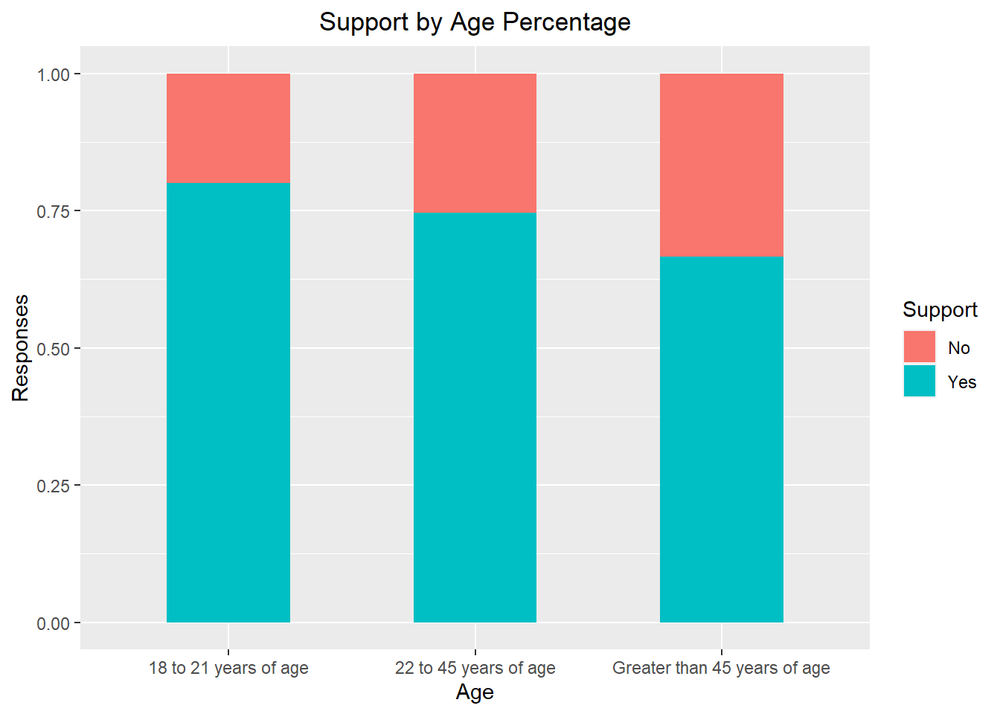
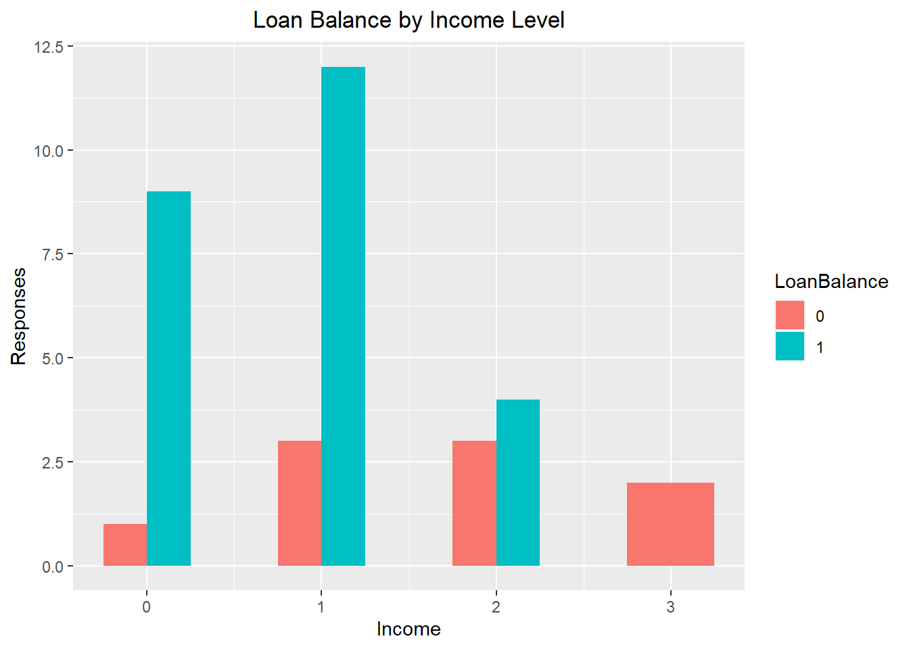
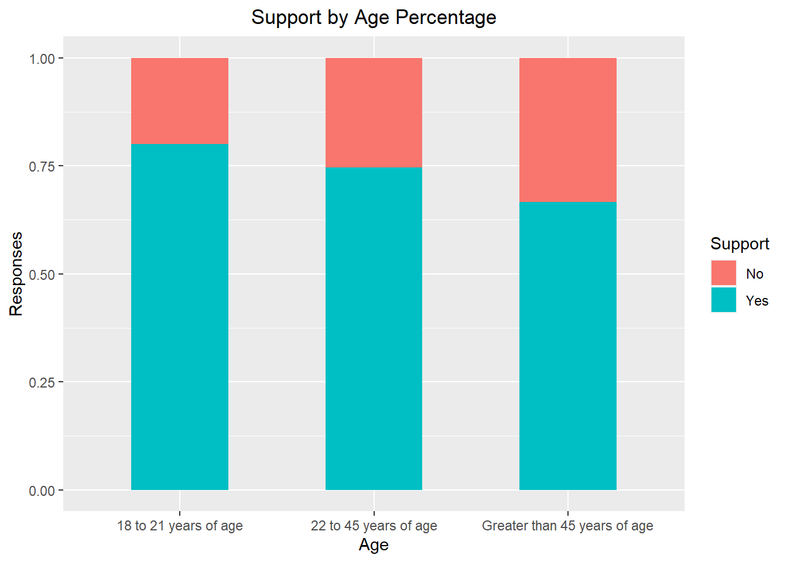
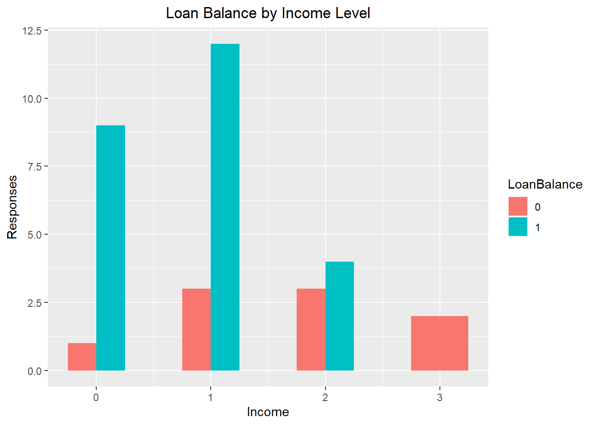
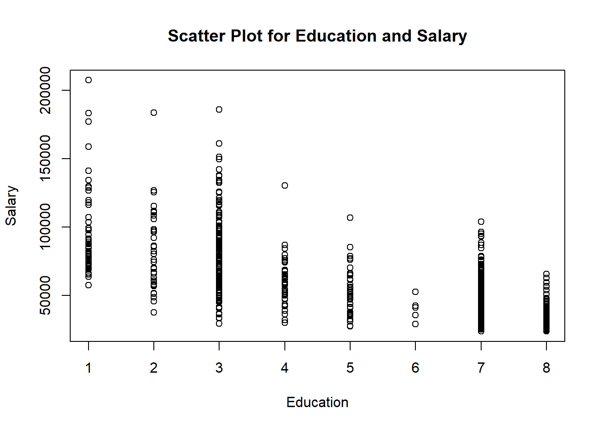
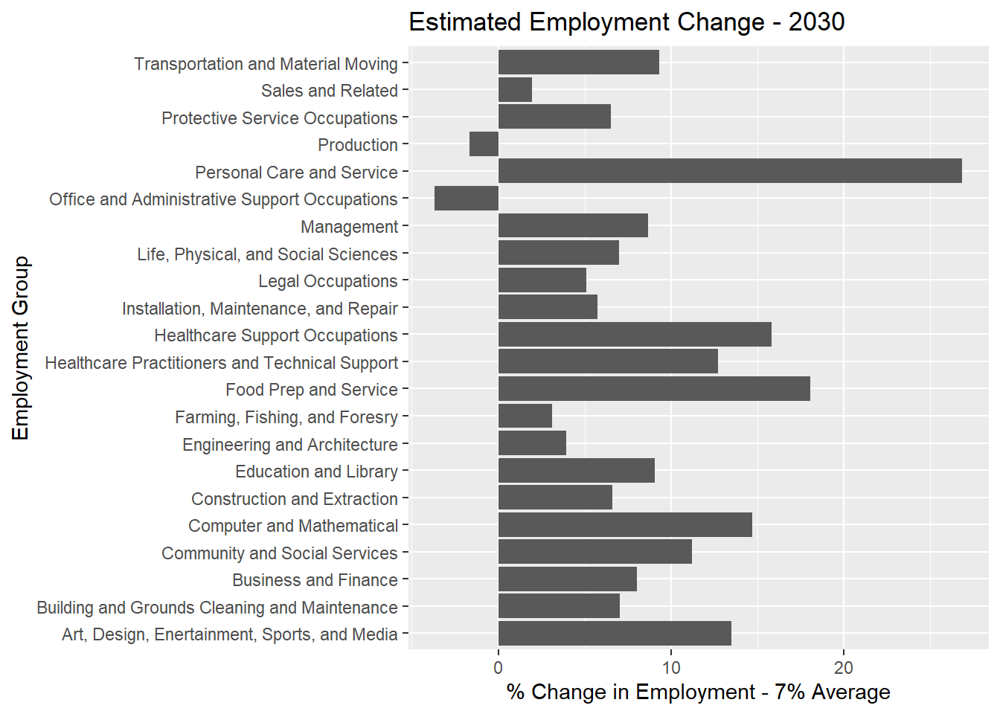
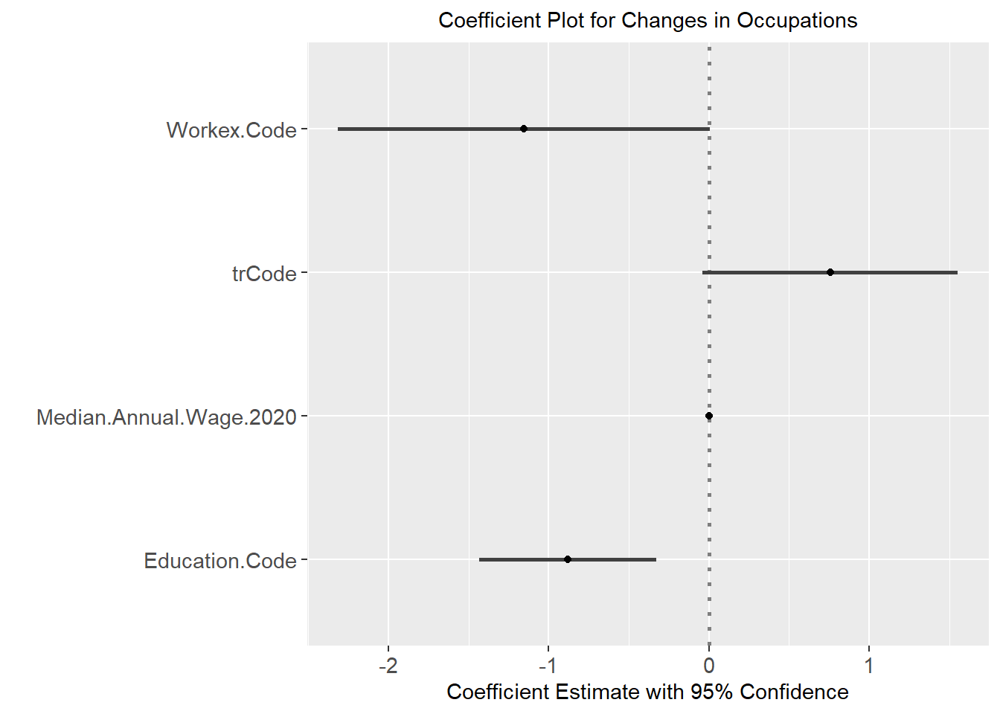

Study of Support for the 2022 Student Loan Forgiveness Program


Review of US Bureau of Labor Statistics Occupation Projections - 2020 through 2030
Note - Bureau of Labor Statistics data elements for education, training, and experience are ordered so that higher levels of a given variable are closer to zero. For example, lower levels of education are identified with higher numbers (4 through 8 are less than a bachelor’s degree) and higher levels of education are lower numbers (1 through 3 are bachelor’s degree requirements or higher). The result of this coding methodology is output that is not intuitive to interpret.
Jobs requiring higher levels of training, experience, and education are not expected to experience as much volatility (large increases or decreases) as jobs requiring less training, experience, and education.




